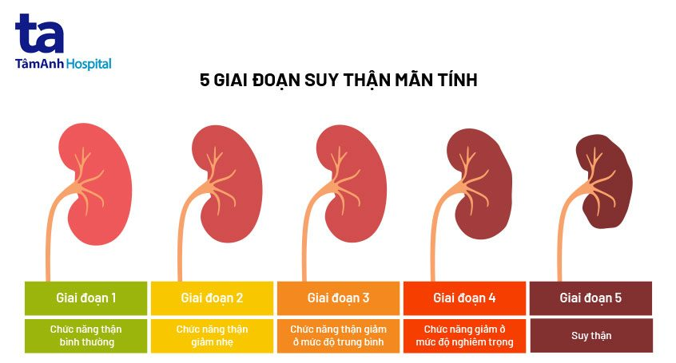
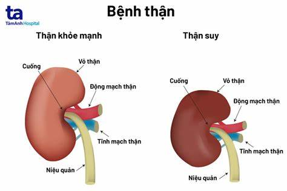
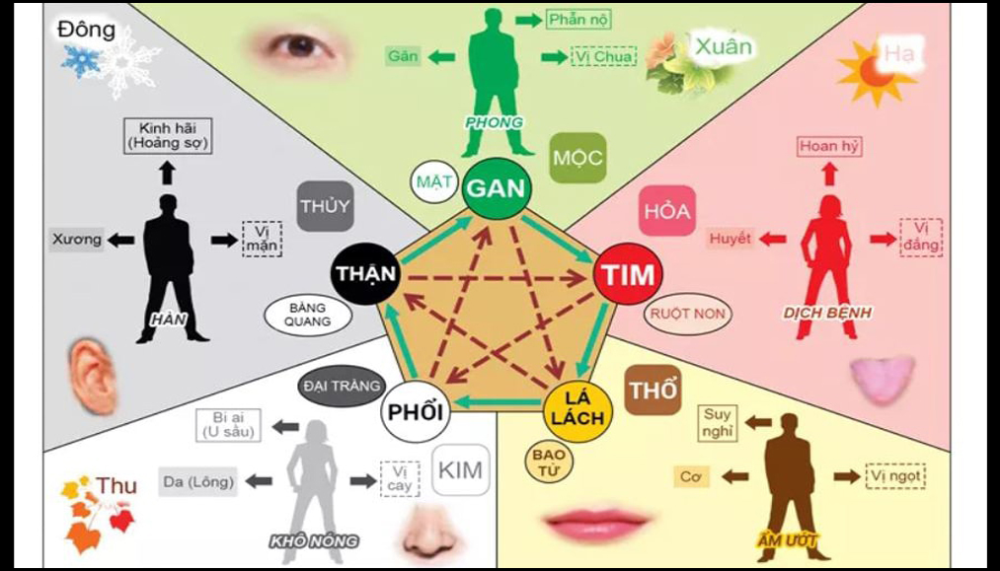

Một số bài viết về Đông Y & phương pháp chữa bệnh
Bệnh về thận
Bệnh về thận là một nhóm các bệnh lý ảnh hưởng đến chức năng của cơ quan quan trọng này trong việc lọc máu, điều hòa nước và các chất điện giải trong cơ thể. Các bệnh về thận có thể gây ra nhiều biến chứng nghiêm trọng nếu không được chẩn đoán và điều trị kịp thời.


Các loại bệnh về thận:
1. Suy thận cấp (AKI - Acute Kidney Injury):
- Là sự suy giảm nhanh chóng của chức năng thận, thường do thiếu máu đột ngột, chấn thương, dị ứng hoặc sử dụng thuốc không phù hợp. Các triệu chứng có thể bao gồm giảm lượng nước tiểu, chán ăn, buồn nôn và mệt mỏi.
2. Suy thận mạn tính (CKD - Chronic Kidney Disease):
- Là sự suy giảm dần dần của chức năng thận, thường do các bệnh lý như tiểu đường, cao huyết áp, viêm nhiễm mạn tính và sử dụng thuốc lâu dài. CKD có thể dẫn đến suy thận mãn tính và đòi hỏi điều trị định kỳ để duy trì chức năng thận.
3. Viêm thận (Nephritis):
- Là sự viêm nhiễm của các bộ phận của thận, có thể do các bệnh lý khác nhau hoặc do tổn thương bệnh lý tự miễn dịch. Viêm thận có thể gây ra các triệu chứng như sưng mặt, tiểu nhiều và tiểu đêm.
4. Sỏi thận (Kidney Stones):
- Là các cục sỏi hình thành trong niệu quản, có thể gây ra đau cực độ và khó chịu khi đi tiểu. Nguyên nhân có thể là do lượng muối canxi cao trong nước tiểu hoặc do các yếu tố di truyền.
5. Ung thư thận (Kidney Cancer):
- Là một loại ung thư phát triển từ các tế bào của thận. Các triệu chứng sớm thường không rõ ràng, và ung thư thận thường được phát hiện ở giai đoạn muộn khi đã lan sang các cơ quan khác.
Các phương pháp điều trị bệnh về thận bằng Đông Y
1. Thảo dược:
- Đậu phộng (Hoài sơn): Giúp làm mát thận, giải độc, điều hòa chức năng thận.
- Tử nhuệ (Diệp hạ châu): Có tác dụng lợi tiểu, giảm sưng, cải thiện chức năng thận.
- Thục địa (Đương quy): Bổ thận, cân bằng năng lượng cơ thể, hỗ trợ chữa lành các tổn thương thận.
- Ngưu tất (Địa hoàng): Bổ thận, giúp điều hòa lưu thông khí huyết.
2. Châm cứu và xoa bóp:
- Châm cứu: Kích thích các huyệt đạo liên quan đến thận để điều hòa năng lượng và cải thiện chức năng thận.
- Xoa bóp và bấm huyệt: Giúp thư giãn cơ bắp, cải thiện tuần hoàn máu và hỗ trợ chức năng thận.
3. Dinh dưỡng và lối sống:
- Giữ cho cân nặng ở mức hợp lý và tránh thực phẩm giàu đạm.
- Đảm bảo cân bằng nước và chế độ ăn uống lành mạnh.
Lưu ý quan trọng
- Việc sử dụng Đông Y để điều trị các bệnh về thận nên được thực hiện dưới sự giám sát của các chuyên gia y tế có chuyên môn.
- Kết hợp giữa phương pháp Đông Y và các phương pháp y học hiện đại là cách tiếp cận tối ưu nhất để điều trị và quản lý bệnh về thận.
Việc chăm sóc và điều trị sớm các bệnh về thận là rất quan trọng để ngăn ngừa các biến chứng nghiêm trọng và cải thiện chất lượng cuộc sống của người bệnh.